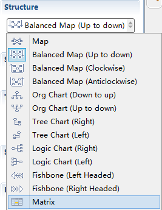
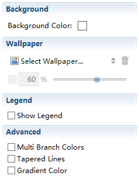

構造
Xmind ファシリテーションは、5 種類のマップとチャートの構造を適用することができます。マップ、マトリックス、魚骨図 (左向き、右向き)、組織図 (上から下方向、下から上方向)、およびツリー です。マップ全体の構造だけでなく枝を簡単に変更できます。その方法：
マップを構造を変更する:- 中央のトピック を選択します。
- プロパティ を開きます。
- 構造のドロップ ダウン リストで目的の構造を選択します。

枝の構造を変更する:- 枝のルートとなるトピック を選択します。
- プロパティ を開きます。
- 構造のドロップ ダウン リストで目的の構造を選択します。
注:
- 1 つのマップ内で、全体のマップがマトリックス 、一部が魚骨図、一部が組織図のように、複数の構造を使用できます。
- 枝のトピックは、メイン トピック、サブトピック、またはフローティング トピックにすることができます。
次の手順で、あなたのマップを変更することができます。
- マップ上の任意の空白の場所をクリックしてマップを選択します。
-
プロパティ を開きます。
- '背景色'を変更。
- 壁紙 を選択します。
- 詳細: チェックボックスで、 '複数枝のカラー' と ' 細くなるライン ' を設定。
- 図例： '図例を表示します'のチェックのオン/オフで設定。

マップ ナビゲーション矢印キーで、マップ上の任意のトピックに移動することができます。 下記 2 通りの方法で簡単にマップを拡大/縮小することもできます :
- マップ エディター下の、ミニ ツールバーを使用して、地図をズームします。

- ショートカットを使用する: Ctrl キーを押しながらマウス ホイールをスクロールします。 (Mac ではコマンドキー)